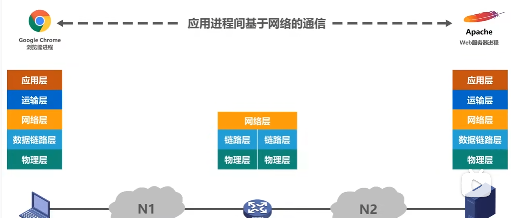
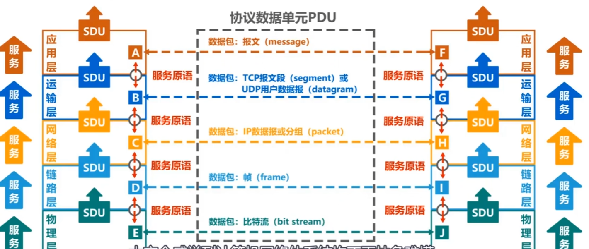
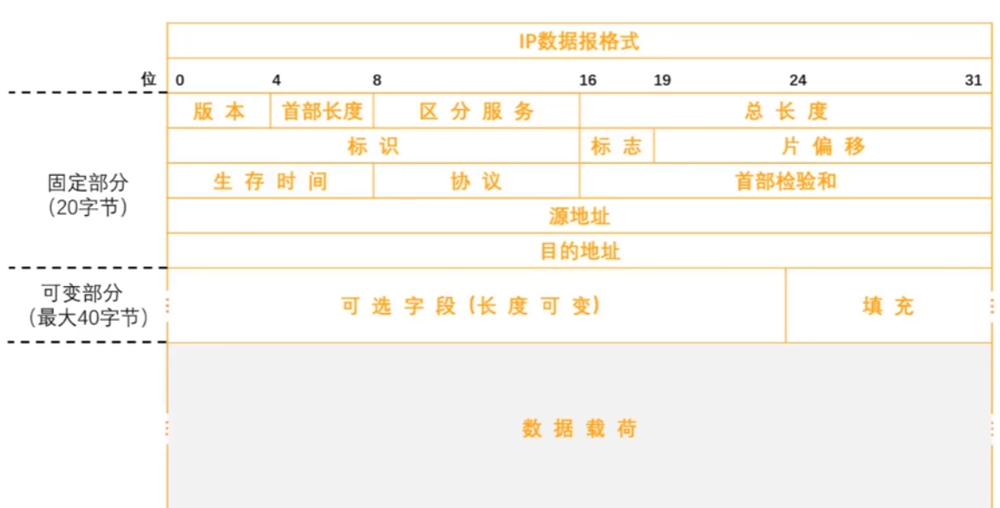

参考视频：计算机网络微课堂-湖科大教书匠
一. 导论
网络、互联网、因特网
网络由若干结点和连接这些结点的链路组成。
结点可以是手机/主机/打印机/交换机，链路可以是有线/无线。
多个网络通过路由器连接起来，形成互联网(internet)。因特网(Internet)是最大的互联网。
互联网的通信协议可以是任意的，因特网的通信协议是TCP/IP协议。
因特网的组成
由边缘部分和核心部分组成。边缘部分就是所有连接在因特网的主机，核心部分就是大量网络和连接这些网路的路由器组成。为连入核心部分的边缘部分提供数据交换服务。
三种交换方式
电路交换
定义：就是很多设备连接到交换机上，交换机感性理解就是有许多入口和出口，它可以指定某个入口的信号发送到某个出口，这样，多个设备就可以同时互不干扰的发送信号了。交换机又可以与交换机相连，扩大网络范围。
电路交换的步骤：
- 建立连接（给通信俩主机分配一条物理通信线路）
- 传输信号（这条物理通信线路一直被占用）
- 释放连接（归还通信资源）
电路交换的优缺点
- 优点 ：延迟小，通信线路都双方专属了，能不小吗。而且数据是有序的。
- 缺点：建立连接时间长；无法做到很多台主机之间同时相互通信（因为俩俩主机通信时就会占用一条通信线路，但是没有那么多通信线路）
报文交换
- 定义：就是不建立连接了，也就是不锁死一条通信线路了。而是直接把报文(发送的数据)发送到交换机上，然后交换机存储转发给下一个交换机，一直到接收方收到报文为止。
- 报文交换的优缺点
- 优点：无需建立连接；动态分配线路
- 缺点：引入了转发时延；需要较大的缓存空间(报文可能很大)
分组交换
定义：就是所谓的边缘部分和核心部分，发送方将报文发送到其所连网络中，通过路由器不断的转发，最终转发到接收方中。
分组交换步骤
- 构造分组：先讲报文划分成若干个等长的数据段，在每个数据段前加上元数据，这些元数据叫首部。
- 存储转发：路由器在拿到分组后，根据首部进行查表转发，找到合适的转发接口，然后转发给下一个路由器
- 还原报文：接收方在收到分组后，去掉首部，将数据段组合还原出报文
- Note：对于同一报文的不同分组，分组的路由路径不一定相同，而且分组到达接收者的顺序不一定与发送时的顺序相同。
分组交换的优缺点
- 优点：无需建立连接；简化了存储管理（因为对报文进行了切片，所以路由器的缓存区只需固定即可，不论报文多大都可以切片为分组后转发出去）；减小重发数据量（假设传输过程中出错了，报文交换就要重新发送整个报文，但分组交换只需重发出错的那个分组即可）
- 缺点：引入了转发时延；更多的元数据信息（切完片后每个分组都有首部）；还原报文时复杂
计算机网络的性能指标
速率
- 8bit = 1B(byte)，kb = \(2^{10}\)B
- bit/s (b/s, bps) （速率的单位都是bit，其余的速率单位也要换算为bit来求解）
- kb/s = \(10^3\) b/s
- mb/s = \(10^6\) b/s
- Gb/s = \(10^9\) b/s
- Tb/s = \(10^{12}\) b/s
- 例题：有一个待发送的数据块，大小为100 MB，网卡的发送速率为100 Mbps，则网卡发送完该数据块需要多长时间?
- 100 mbps =\(10^6\) b/s
- 100MB = \(2^{20} \cdot 2^3\) = \(2^{23}\) b
- 所以t = \(\frac{2^{23}}{10^6} = 8.388608\) s
带宽
- 带宽在模电里的定义：即某段频率区间的宽度
- 带宽在计网中的定义：即最大传输速率，基本单位为b/s，与速率的单位一样
吞吐量
- 定义：表示单位时间内通过某个网络（或信道、接口）的数据量
- 吞吐量的上限就是带宽。
时延
- 定义：网络时延 = 发送时延 + 传播时延 + 处理时延
- 其中，发送时延是计算机将信息发送到网络中的时延，传播时延是网络的信息传播到路由器的时延，处理时延是路由器存储转发的时延
- 例题：
- 发送时延 = \(\frac{100MB}{1Mb / s} = \frac{100 * 2^{30} * 8}{10^6 b/s} = 838.8608s\)
- 传播时延 = \(\frac{1000 * 1000m}{2 * 10^8 m/s} = 0.005s\)
时延带宽积
- 定义：时延带宽积 = 传播时延 * 带宽
- 把带宽想象成横截面积，传播时延想象为长度，则乘积就是管道的长度。也就是若发送端连续发送数据，则在所发送的第一个比特即将到达终点时，发送端就已经发送了时延带宽积个bit。
往返时间
- 定义：双向交互一次所需的时间
利用率
- 信道利用率：表示信道有百分之几的时间是被利用的（有数据通过）
- 网络利用率：全网络的信道利用率的加权平均
- Note：信道利用率并非越高越好，因为利用率越高，传播时延就越高。
- 如果令\(D_0\)为网络空闲时的时延，\(D\)为当前的时延，利用率为\(U\)。则有公式：\(D = \frac{D_0}{1 - U}\)
丢包率
- 定义：在一定时间范围内，传输过程中丢失的分组数量与总分组数量的比率
- 分组丢失的主要两种情况
- 分组在传输过程中出现误码，被结点丢弃
- 分组在到达分组交换机被丢弃，因为其缓存容量满了
二. 计算机网络体系结构总览
计网体系结构的分类
- OSI体系结构（法律上的国际标准，但没商用）
- TCP/IP体系结构（事实上的国际标准，已商用）
- 原理体系结构（用来教学用的体系结构，是在TCP/IP体系结构上的展开）
- 物理层、数据链路层、网络层、运输层、应用层
分层的必要性
- 物理层：你需要考虑用什么线(光纤/双绞线)去传输信号，用怎样的物理接口、使用什么信号表示0和1，这些都是物理层要考虑的问题。当把物理层解决的时候，我们就可以实现把信号从本机上发射出去了。
- 数据链路层：考虑下面这个场景，一条总线，然后连出很多分线到各个主机上。那么，假设其中一台主机向总线发送了数据，那么他的目标主机咋知道流过的bit流是否是发送给自己的？以及，如果协调各个主机发送的信号争用总线的问题？这些都是数据链路层要解决的问题（提前剧透一下，数据链路层引入了MAC的概念，用于区别网络中的主机）。当解决了数据链路层，我们用可以实现一个网络中的信号传输了。
- 网络层：此时视角来到了很很多路由器、网络、主机的大网络。此时，我们面临着如何标识各网络中各主机的问题（剧透：引入IP地址），以及分组如何选择从源点到目的地的路径。这些问题都划分到网络层去解决。解决了网络层，那么数据就可以在大网络里相互传递了。
- 运输层：在解决网络层的基础上，假设出现了丢包，或者主机接收到分组后，它咋知道是给QQ？还是给微信？所以，这些都是运输层要考虑的问题。当解决了运输层的时候，就已经可以实现进程之间网络的通信了。
- 应用层：这一层就是各种应用的协议，比如万维网的http协议，电子邮件的smtp协议，文件传输的ftp协议，通过各种协议+进程间的交互来完成特定的网络应用。
分层思想举例

- 首先，你打开浏览器进程，然后发送一个访问请求，应用层按照http协议构建一个http请求报文，然后丢给运输层。
- 运输层在http报文的首部添加一个tcp首部，为了区分应用进程和可靠传输，此时成为tcp数据报。
- 网络层在tcp数据报添加一个ip首部，为了使ip数据报在互联网上运行，此时成为ip数据报。
- 数据链路层在ip数据报添加一个首部和尾部ETH，为了让其在一个网络/链路上传输，此时成为帧。
- 物理层在帧前加前导码，然后传输
计网体系结构专用术语
- 专业术语来源于OSI的七层协议体系结构，但也适用于TCP/IP的四层体系结构和五层协议原理体系结构。

实体
- 实体定义：任何可发送或接收信息的硬件或软件进程
- 对等实体定义：收发双方相同层次中的实体
协议
定义：控制两个对等实体进行逻辑通信的规则的集合。
- 比如http协议是控制在应用层的俩对等实体进行通信的规则。tcp/udp协议就是运输层的协议，ip就是网络层的协议
协议的三要素
语法：定义所交换信息的格式，例如IP协议所添加的ip数据报格式如下：

语义：定义收发双方所要完成的操作
- 就是收到报文后双方要做的动作。以http协议为例，接收方收到http请求报文后，先查找，然后返回一个响应报文。
同步：定义收发双方的时序关系
服务
- 定义：在协议的控制下，两个对等实体间的逻辑通信使得本层能向上一层提供服务。要实现本层协议，还需要使用下面一层所提供的服务。
- Note：协议是“水平”的，服务是“垂直”的
服务访问点
- 定义：在同一系统中相邻两层的实体交换信息的逻辑接口，用于区别不同的服务类型。（目前还没搞懂，以后再来填坑）
- 数据链路层的服务访问点为帧的“类型”字段
- 网络层的服务访问点为IP数据报首部中的“协议字段”
- 运输层的服务访问点为“端口号”
服务原语
- 定义：上层使用下层所提供的服务必须通过与下层交换一些命令，这些命令称为服务原语。（没搞懂，以后来填坑）
协议数据单元PDU
- 定义：对等层次之间的数据包称为该层的协议数据单元
- 物理层的PDU：比特流
- 数据链路层的PDU：帧
- 网络层的PDU：IP数据报
- 运输层的PDU：TCP报文段
- 应用层的PDU：报文
服务数据单元SDU
- 定义：同一系统内，层与层之间交换的数据包称为服务数据单元
- Note：多个SDU可以合成为一个PDU，一个SDU也可以划分为几个PDU
习题课
待填坑... ...